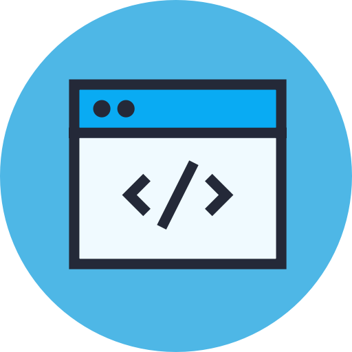

Frontend
A matéria será ministrada pelo professor Vinicius Marson, CTO da Singu e especialista em
desenvolvimento de
produtos. O curso será 80% prática e 20% teoria, então se prepare para
colocar muito a mão na massa. O curso estara presente na sua vida academica em 3 modulos:
- Frontend 1 - HTML, CSS e Javacript
- Frontend 2 - React
- Frontend 3 - Angular
MAIS SOBRE O
PROFESSOR

Frontend 1
Introdução ao desenvolvimento de aplicações Web Front End, introdução a HTML e suas principais
características, criação de estruturas e páginas com HTML, análise de códigos HTML de páginas conhecidas,
apresentação do CSS, suas propriedades, comandos, desenvolvimento de páginas utilizando HTML e CSS.
- Unidade 1 –Introdução ao desenvolvimento de aplicações Web Front End
- Unidade 2 –Introdução a HTML e análise de códigos HTML.
- Unidade 3 –CSS e desenvolvimento de páginas utilizando HTML e CSS
- Unidade 4 –Javascript e desenvolvimento de interfaces
Frontend 2
Desenvolvimento de aplicações Web Front End. Apresentar o framework React baseado em Javascript,
apresentação dos componentes, conceito de Single-Page Application, formulários, introdução aos padrões
arquiteturais Flux e Redux e integração com Backend utilizando Rest.
- Unidade 1 – Aplicações Web Front End
- Unidade 2 – React baseado em Javascript
- Unidade 3 - Single-Page Application
- Unidade 4 – Flux, Redux e integração com Backend

Frontend 3
Aplicações Web Front End. Apresentar o framework Angular baseado em Javascript, apresentação dos
componentes, conceito de Single-Page Application, formulários, camadas de aplicação, fluxos de dados e
integração com Backend.
- Unidade 1 – Desenvolvendo aplicações Web Front End
- Unidade 2 – Angular baseado em Javascript
- Unidade 3 – Single-Page Application
- Unidade 4 – Fluxos de dados e integração com Backend